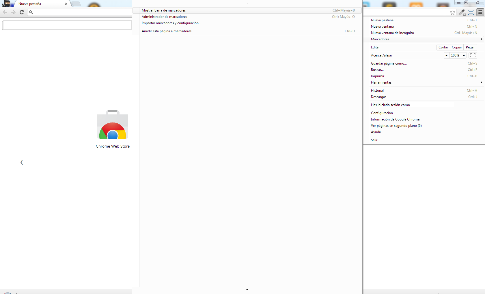
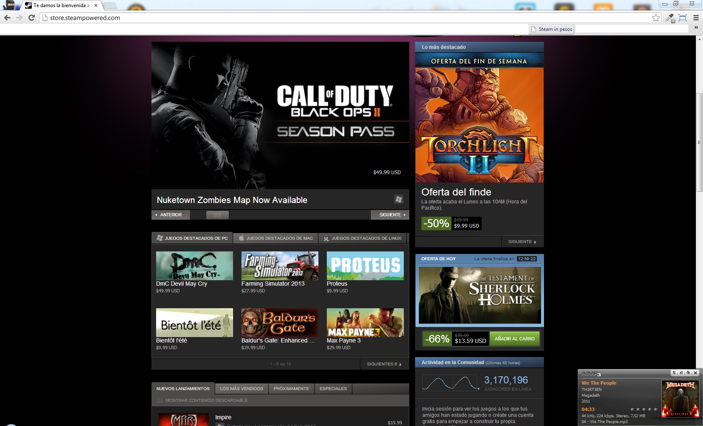

Steam en tu moneda natal
2013/02/18

¿Y esto qué es?
Esto es un simple pero útil script de mi autoría, el cual transforma los precios de Steam en tu moneda natal. Lo realicé en base a la pereza de tener que convertir los precios cada vez que quería ver cuanto salia cada uno. Cualquier sugerencia en cuanto al post, o al script será bienvenida siempre y cuando sea constructiva.
Me interesó, ¿Cómo lo instalo?
1. Primero activá la barra de marcadores si no esta activa, en este ejemplo con Google Chrome 
2. Creá un nuevo marcador.

3. Colocá el nombre que te guste, y en URL colocá el siguiente codigo (Esta ordenado para el que el interese leerlo)

javascript: (function(window){
/*
* @author @pudymody
* @version 0.1
*/
var PRICE = prompt('Ingrese el valor de 1 USD');
PRICE = parseFloat(PRICE) || 0;
if(PRICE < 1){ return false; }
function formatPrice(html){
var clean = html.replace('$','').replace(' USD','');
var parsed = parseFloat(clean);
return parsed > 0 ? (parsed * PRICE).toFixed(2) : 0 ;
}
var $ELEM = document.querySelectorAll('[class*="_price"]');
for (var i = 0; i < $ELEM.length; i++) {
var $THIS = $ELEM[i];
if($THIS.childElementCount == 0){
$THIS.innerHTML = '$' + formatPrice($THIS.innerHTML);
}
$THIS = null;
};
var $SMALLCAP = document.getElementsByClassName('small_cap');
for (var i = 0; i < $SMALLCAP.length; i++) {
var $THIS = $SMALLCAP[i].children[2];
if($THIS && $THIS.tagName == 'H5' && $THIS.innerHTML != 'Free to Play'){
$THIS.innerHTML = '$' + formatPrice($THIS.innerHTML);
}
$THIS = null;
};
})(window);
4. Navegá a la tienda de Steam y presioná sobre tu nuevo marcador 
5. En la ventana que aparece, colocá el precio de 1 dolar en tu moneda natal, en este caso 5 (1 u$s = $5)

6. Listo! Ya tenes los precios de los juegos en tu moneda natal.